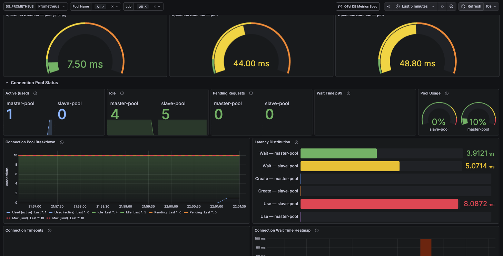

Migration Notes (from 0.5.x to 0.6.x)
Packages
All Packages
| Module / Platform | JVM | Scala Native | Scala.js | Scaladoc |
|---|---|---|---|---|
ldbc-sql |
✅ | ✅ | ✅ | |
ldbc-core |
✅ | ✅ | ✅ | |
ldbc-connector |
✅ | ✅ | ✅ | |
jdbc-connector |
✅ | ❌ | ❌ | |
ldbc-dsl |
✅ | ✅ | ✅ | |
ldbc-statement |
✅ | ✅ | ✅ | |
ldbc-query-builder |
✅ | ✅ | ✅ | |
ldbc-schema |
✅ | ✅ | ✅ | |
ldbc-codegen |
✅ | ✅ | ✅ | |
ldbc-plugin |
✅ | ❌ | ❌ | |
ldbc-zio-interop |
✅ | ❌ | ✅ | |
ldbc-authentication-plugin |
✅ | ✅ | ✅ | |
ldbc-aws-authentication-plugin |
✅ | ✅ | ✅ |
🎯 Major Changes
1. Significant Expansion of OpenTelemetry Telemetry
0.6.0 greatly enhances telemetry support compliant with OpenTelemetry Semantic Conventions v1.39.0.
Addition of TelemetryConfig
TelemetryConfig has been added to provide fine-grained control over telemetry behavior.
import ldbc.connector.telemetry.TelemetryConfig
// Default configuration (spec-compliant)
val config = TelemetryConfig.default
// Disable query summary generation
val noSummaryConfig = TelemetryConfig.withoutQueryTextExtraction
// Custom configuration
val customConfig = TelemetryConfig.default
.withoutQueryTextExtraction // Disable automatic db.query.summary generation
.withoutSanitization // Disable query sanitization (caution: may expose sensitive data)
.withoutInClauseCollapsing // Disable IN clause collapsing| Option | Default | Description |
|---|---|---|
extractMetadataFromQueryText |
true |
Generate db.query.summary from query text for span naming |
sanitizeNonParameterizedQueries |
true |
Replace literals with ? in non-parameterized queries (required by spec) |
collapseInClauses |
true |
Collapse IN (?, ?, ?) to IN (?) to reduce cardinality |
Addition of DatabaseMetrics and Meter
Connection pool metrics (wait time, use time, timeout count) can now be recorded via OpenTelemetry's Meter.
import org.typelevel.otel4s.metrics.Meter
import ldbc.connector.*
// Inject Meter to enable pool metrics
MySQLDataSource.pooling[IO](
config = mysqlConfig,
meter = Some(summon[Meter[IO]])
).use { pool =>
// Pool wait time, use time, and timeouts are automatically recorded
pool.getConnection.use { conn => ... }
}New Methods on MySQLDataSource
setMeter and setTelemetryConfig have been added to MySQLDataSource.
import org.typelevel.otel4s.metrics.Meter
import ldbc.connector.*
import ldbc.connector.telemetry.TelemetryConfig
val datasource = MySQLDataSource
.build[IO](host = "localhost", port = 3306, user = "ldbc")
.setPassword("password")
.setDatabase("mydb")
.setMeter(summon[Meter[IO]])
.setTelemetryConfig(TelemetryConfig.default.withoutQueryTextExtraction)pooling Method Signature Change
meter and telemetryConfig parameters have been added to MySQLDataSource.pooling and MySQLDataSource.poolingWithBeforeAfter. Existing code calling them without these arguments remains valid due to default values, but update is required when using metrics.
Before (0.5.x):
MySQLDataSource.pooling[IO](
config = mysqlConfig,
metricsTracker = Some(tracker),
tracer = Some(tracer)
).use { pool => ... }After (0.6.x):
MySQLDataSource.pooling[IO](
config = mysqlConfig,
metricsTracker = Some(tracker),
meter = Some(summon[Meter[IO]]),
tracer = Some(tracer),
telemetryConfig = TelemetryConfig.default
).use { pool => ... }TelemetryAttribute Key Name Changes (Breaking Change)
TelemetryAttribute constant names have been updated to align with Semantic Conventions v1.39.0. Updates are required if you reference TelemetryAttribute directly.
| Old (0.5.x) | New (0.6.x) |
|---|---|
DB_SYSTEM |
DB_SYSTEM_NAME |
DB_OPERATION |
DB_OPERATION_NAME |
DB_QUERY |
DB_QUERY_TEXT |
STATUS_CODE |
DB_RESPONSE_STATUS_CODE |
VERSION |
DB_MYSQL_VERSION |
THREAD_ID |
DB_MYSQL_THREAD_ID |
AUTH_PLUGIN |
DB_MYSQL_AUTH_PLUGIN |
2. Enhanced MySQL 9.x Support
MySQL 9.x is officially supported starting from 0.6.0. Internal behavior automatically adapts based on the connected MySQL version.
getCatalogs Change for MySQL 9.3.0+
For MySQL 9.3.0 and later, the internal implementation of getCatalogs() switches from the mysql system table to INFORMATION_SCHEMA.SCHEMATA. There is no impact on user code, but when connecting to MySQL 9.3+, SELECT privileges on INFORMATION_SCHEMA are required.
getTablePrivileges Change
The internal implementation of DatabaseMetaData.getTablePrivileges() has been changed from mysql.tables_priv to INFORMATION_SCHEMA.TABLE_PRIVILEGES.
3. Schema: VECTOR Type Added
A DataType representing MySQL's VECTOR type has been added to the ldbc-schema module.
import ldbc.schema.*
class EmbeddingTable extends Table[Embedding]("embeddings"):
def id: Column[Long] = column[Long]("id")
def embedding: Column[Array[Float]] = column[Array[Float]]("embedding", VECTOR(1536))
override def * = (id *: embedding).to[Embedding]4. Improved Error Tracing
span.setStatus(StatusCode.Error, message) is now automatically set when an error occurs in the Protocol layer. Error spans are correctly displayed in distributed tracing tools (Jaeger, Zipkin, etc.). No changes to user code are required.
5. Sample Grafana Dashboard
A Grafana dashboard is provided to quickly visualize connection pool observability. Requires a Prometheus data source.
Panels included in the dashboard:
- DB Operation Duration (p50 / p95 / p99)
- Connection Pool Status (Active / Idle / Pending / Wait Time p99 / Pool Usage %)
- Connection Pool Breakdown (time series graph)
- Latency Distribution (average Wait / Create / Use)
- Connection Timeouts (15-minute window)
- Connection Wait Time Heatmap

You can create the dashboard shown above by importing the following JSON into Grafana.
Show dashboard JSON (click to expand)
{
"__inputs": [
{
"name": "DS_PROMETHEUS",
"label": "Prometheus",
"description": "",
"type": "datasource",
"pluginId": "prometheus",
"pluginName": "Prometheus"
}
],
"__elements": {},
"__requires": [
{
"type": "grafana",
"id": "grafana",
"name": "Grafana",
"version": "10.0.0"
},
{
"type": "datasource",
"id": "prometheus",
"name": "Prometheus",
"version": "1.0.0"
},
{
"type": "panel",
"id": "stat",
"name": "Stat",
"version": ""
},
{
"type": "panel",
"id": "gauge",
"name": "Gauge",
"version": ""
},
{
"type": "panel",
"id": "timeseries",
"name": "Time series",
"version": ""
},
{
"type": "panel",
"id": "heatmap",
"name": "Heatmap",
"version": ""
},
{
"type": "panel",
"id": "alertlist",
"name": "Alert list",
"version": ""
}
],
"annotations": {
"list": [
{
"builtIn": 1,
"datasource": {
"type": "grafana",
"uid": "-- Grafana --"
},
"enable": true,
"hide": true,
"iconColor": "rgba(0, 211, 255, 1)",
"name": "Annotations & Alerts",
"type": "dashboard"
}
]
},
"description": "MySQL Connection Pool observability dashboard using OpenTelemetry Semantic Conventions (db.client.* metrics). Requires OTel Java Agent or manual OTel instrumentation with Prometheus exporter.",
"editable": true,
"fiscalYearStartMonth": 0,
"graphTooltip": 1,
"id": null,
"links": [
{
"title": "OTel DB Metrics Spec",
"url": "https://opentelemetry.io/docs/specs/semconv/db/database-metrics/",
"type": "link",
"icon": "external link",
"targetBlank": true
}
],
"liveNow": false,
"panels": [
{
"id": 102,
"type": "row",
"title": "DB Operation Duration (OTel Stable)",
"gridPos": { "h": 1, "w": 24, "x": 0, "y": 0 },
"collapsed": false,
"panels": []
},
{
"datasource": { "type": "prometheus", "uid": "${DS_PROMETHEUS}" },
"type": "gauge",
"id": 50,
"title": "Operation Duration — p50",
"gridPos": { "h": 7, "w": 8, "x": 0, "y": 1 },
"targets": [
{
"datasource": { "type": "prometheus", "uid": "${DS_PROMETHEUS}" },
"expr": "histogram_quantile(0.50, sum by (le) (increase(db_client_operation_duration_seconds_bucket{db_system_name=\"mysql\", job=~\"${job}\"}[$__range])))",
"refId": "A", "editorMode": "code", "range": false, "instant": true
}
],
"fieldConfig": {
"defaults": {
"unit": "s", "decimals": 2, "min": 0, "max": 0.1,
"color": { "mode": "thresholds" },
"thresholds": { "mode": "absolute", "steps": [
{ "color": "green", "value": null },
{ "color": "yellow", "value": 0.01 },
{ "color": "orange", "value": 0.05 },
{ "color": "red", "value": 0.1 }
]}
}, "overrides": []
},
"options": { "reduceOptions": { "calcs": ["lastNotNull"], "fields": "", "values": false }, "showThresholdLabels": false, "showThresholdMarkers": true, "orientation": "auto" }
},
{
"datasource": { "type": "prometheus", "uid": "${DS_PROMETHEUS}" },
"type": "gauge",
"id": 51,
"title": "Operation Duration — p95",
"gridPos": { "h": 7, "w": 8, "x": 8, "y": 1 },
"targets": [
{
"datasource": { "type": "prometheus", "uid": "${DS_PROMETHEUS}" },
"expr": "histogram_quantile(0.95, sum by (le) (increase(db_client_operation_duration_seconds_bucket{db_system_name=\"mysql\", job=~\"${job}\"}[$__range])))",
"refId": "A", "editorMode": "code", "range": false, "instant": true
}
],
"fieldConfig": {
"defaults": {
"unit": "s", "decimals": 2, "min": 0, "max": 0.1,
"color": { "mode": "thresholds" },
"thresholds": { "mode": "absolute", "steps": [
{ "color": "green", "value": null },
{ "color": "yellow", "value": 0.01 },
{ "color": "orange", "value": 0.05 },
{ "color": "red", "value": 0.1 }
]}
}, "overrides": []
},
"options": { "reduceOptions": { "calcs": ["lastNotNull"], "fields": "", "values": false }, "showThresholdLabels": false, "showThresholdMarkers": true, "orientation": "auto" }
},
{
"datasource": { "type": "prometheus", "uid": "${DS_PROMETHEUS}" },
"type": "gauge",
"id": 52,
"title": "Operation Duration — p99",
"gridPos": { "h": 7, "w": 8, "x": 16, "y": 1 },
"targets": [
{
"datasource": { "type": "prometheus", "uid": "${DS_PROMETHEUS}" },
"expr": "histogram_quantile(0.99, sum by (le) (increase(db_client_operation_duration_seconds_bucket{db_system_name=\"mysql\", job=~\"${job}\"}[$__range])))",
"refId": "A", "editorMode": "code", "range": false, "instant": true
}
],
"fieldConfig": {
"defaults": {
"unit": "s", "decimals": 2, "min": 0, "max": 0.1,
"color": { "mode": "thresholds" },
"thresholds": { "mode": "absolute", "steps": [
{ "color": "green", "value": null },
{ "color": "yellow", "value": 0.01 },
{ "color": "orange", "value": 0.05 },
{ "color": "red", "value": 0.1 }
]}
}, "overrides": []
},
"options": { "reduceOptions": { "calcs": ["lastNotNull"], "fields": "", "values": false }, "showThresholdLabels": false, "showThresholdMarkers": true, "orientation": "auto" }
},
{
"id": 100,
"type": "row",
"title": "Connection Pool Status",
"gridPos": { "h": 1, "w": 24, "x": 0, "y": 8 },
"collapsed": false,
"panels": []
},
{
"id": 1, "title": "Active (used)", "type": "stat",
"datasource": { "type": "prometheus", "uid": "${DS_PROMETHEUS}" },
"gridPos": { "h": 5, "w": 5, "x": 0, "y": 9 },
"targets": [{ "datasource": { "type": "prometheus", "uid": "${DS_PROMETHEUS}" }, "expr": "db_client_connection_count{db_client_connection_state=\"used\", db_client_connection_pool_name=~\"${pool_name}\", job=~\"${job}\"}", "legendFormat": "{{db_client_connection_pool_name}}", "refId": "A", "editorMode": "code", "range": true }],
"description": "db.client.connection.count{db.client.connection.state=used}",
"options": { "reduceOptions": { "calcs": ["lastNotNull"] }, "graphMode": "area", "colorMode": "value" },
"fieldConfig": { "defaults": { "color": { "mode": "fixed", "fixedColor": "light-blue" }, "unit": "short" }, "overrides": [] }
},
{
"id": 2, "title": "Idle", "type": "stat",
"datasource": { "type": "prometheus", "uid": "${DS_PROMETHEUS}" },
"gridPos": { "h": 5, "w": 5, "x": 5, "y": 9 },
"targets": [{ "datasource": { "type": "prometheus", "uid": "${DS_PROMETHEUS}" }, "expr": "db_client_connection_count{db_client_connection_state=\"idle\", db_client_connection_pool_name=~\"${pool_name}\", job=~\"${job}\"}", "legendFormat": "{{db_client_connection_pool_name}}", "refId": "A", "editorMode": "code", "range": true }],
"description": "db.client.connection.count{db.client.connection.state=idle}",
"options": { "reduceOptions": { "calcs": ["lastNotNull"] }, "graphMode": "area", "colorMode": "value" },
"fieldConfig": { "defaults": { "color": { "mode": "fixed", "fixedColor": "green" }, "unit": "short" }, "overrides": [] }
},
{
"id": 3, "title": "Pending Requests", "type": "stat",
"datasource": { "type": "prometheus", "uid": "${DS_PROMETHEUS}" },
"gridPos": { "h": 5, "w": 5, "x": 10, "y": 9 },
"targets": [{ "datasource": { "type": "prometheus", "uid": "${DS_PROMETHEUS}" }, "expr": "db_client_connection_pending_requests{db_client_connection_pool_name=~\"${pool_name}\", job=~\"${job}\"}", "legendFormat": "{{db_client_connection_pool_name}}", "refId": "A", "editorMode": "code", "range": true }],
"description": "db.client.connection.pending_requests",
"options": { "reduceOptions": { "calcs": ["lastNotNull"] }, "graphMode": "area", "colorMode": "value" },
"fieldConfig": { "defaults": { "color": { "mode": "thresholds" }, "thresholds": { "mode": "absolute", "steps": [{ "color": "green", "value": null }, { "color": "yellow", "value": 1 }, { "color": "red", "value": 3 }] }, "unit": "short" }, "overrides": [] }
},
{
"id": 4, "title": "Wait Time p99", "type": "stat",
"datasource": { "type": "prometheus", "uid": "${DS_PROMETHEUS}" },
"gridPos": { "h": 5, "w": 5, "x": 15, "y": 9 },
"targets": [{ "datasource": { "type": "prometheus", "uid": "${DS_PROMETHEUS}" }, "expr": "histogram_quantile(0.99, sum by (le) (rate(db_client_connection_wait_time_seconds_bucket{db_client_connection_pool_name=~\"${pool_name}\", job=~\"${job}\"}[$__rate_interval])))", "legendFormat": "p99", "refId": "A", "editorMode": "code", "range": true, "interval": "1m" }],
"description": "db.client.connection.wait_time (p99)",
"options": { "reduceOptions": { "calcs": ["lastNotNull"] }, "graphMode": "area", "colorMode": "value" },
"fieldConfig": { "defaults": { "color": { "mode": "thresholds" }, "thresholds": { "mode": "absolute", "steps": [{ "color": "purple", "value": null }, { "color": "yellow", "value": 0.03 }, { "color": "red", "value": 0.1 }] }, "unit": "s", "decimals": 3 }, "overrides": [] }
},
{
"id": 5, "title": "Pool Usage", "type": "gauge",
"datasource": { "type": "prometheus", "uid": "${DS_PROMETHEUS}" },
"gridPos": { "h": 5, "w": 4, "x": 20, "y": 9 },
"targets": [{ "datasource": { "type": "prometheus", "uid": "${DS_PROMETHEUS}" }, "expr": "db_client_connection_count{db_client_connection_state=\"used\", db_client_connection_pool_name=~\"${pool_name}\", job=~\"${job}\"} / ignoring(db_client_connection_state) db_client_connection_max{db_client_connection_pool_name=~\"${pool_name}\", job=~\"${job}\"}", "legendFormat": "{{db_client_connection_pool_name}}", "refId": "A", "editorMode": "code", "range": false, "instant": true }],
"description": "active / max",
"options": { "reduceOptions": { "calcs": ["lastNotNull"] }, "showThresholdLabels": false, "showThresholdMarkers": true },
"fieldConfig": { "defaults": { "color": { "mode": "thresholds" }, "thresholds": { "mode": "absolute", "steps": [{ "color": "green", "value": null }, { "color": "yellow", "value": 0.7 }, { "color": "red", "value": 0.9 }] }, "unit": "percentunit", "min": 0, "max": 1 }, "overrides": [] }
},
{
"id": 6, "title": "Connection Pool Breakdown", "type": "timeseries",
"datasource": { "type": "prometheus", "uid": "${DS_PROMETHEUS}" },
"gridPos": { "h": 9, "w": 12, "x": 0, "y": 14 },
"targets": [
{ "datasource": { "type": "prometheus", "uid": "${DS_PROMETHEUS}" }, "expr": "db_client_connection_count{db_client_connection_state=\"used\", db_client_connection_pool_name=~\"${pool_name}\", job=~\"${job}\"}", "legendFormat": "Used (active)", "refId": "A", "editorMode": "code", "range": true },
{ "datasource": { "type": "prometheus", "uid": "${DS_PROMETHEUS}" }, "expr": "db_client_connection_count{db_client_connection_state=\"idle\", db_client_connection_pool_name=~\"${pool_name}\", job=~\"${job}\"}", "legendFormat": "Idle", "refId": "B", "editorMode": "code", "range": true },
{ "datasource": { "type": "prometheus", "uid": "${DS_PROMETHEUS}" }, "expr": "db_client_connection_pending_requests{db_client_connection_pool_name=~\"${pool_name}\", job=~\"${job}\"}", "legendFormat": "Pending", "refId": "C", "editorMode": "code", "range": true },
{ "datasource": { "type": "prometheus", "uid": "${DS_PROMETHEUS}" }, "expr": "db_client_connection_max{db_client_connection_pool_name=~\"${pool_name}\", job=~\"${job}\"}", "legendFormat": "Max (limit)", "refId": "D", "editorMode": "code", "range": true }
],
"description": "db.client.connection.count by state + max",
"options": { "tooltip": { "mode": "multi", "sort": "desc" }, "legend": { "displayMode": "list", "placement": "bottom", "calcs": ["lastNotNull"] } },
"fieldConfig": {
"defaults": { "custom": { "drawStyle": "line", "lineInterpolation": "smooth", "fillOpacity": 30, "stacking": { "mode": "normal", "group": "A" }, "lineWidth": 1, "showPoints": "never", "gradientMode": "opacity", "axisLabel": "connections", "spanNulls": true }, "unit": "short", "color": { "mode": "palette-classic" } },
"overrides": [
{ "matcher": { "id": "byName", "options": "Used (active)" }, "properties": [{ "id": "color", "value": { "mode": "fixed", "fixedColor": "light-blue" } }] },
{ "matcher": { "id": "byName", "options": "Idle" }, "properties": [{ "id": "color", "value": { "mode": "fixed", "fixedColor": "green" } }] },
{ "matcher": { "id": "byName", "options": "Pending" }, "properties": [{ "id": "color", "value": { "mode": "fixed", "fixedColor": "orange" } }] },
{ "matcher": { "id": "byName", "options": "Max (limit)" }, "properties": [{ "id": "color", "value": { "mode": "fixed", "fixedColor": "red" } }, { "id": "custom.fillOpacity", "value": 0 }, { "id": "custom.stacking", "value": { "mode": "none" } }, { "id": "custom.lineStyle", "value": { "fill": "dash", "dash": [10, 10] } }, { "id": "custom.lineWidth", "value": 2 }] }
]
}
},
{
"id": 7, "title": "Latency Distribution", "type": "bargauge",
"datasource": { "type": "prometheus", "uid": "${DS_PROMETHEUS}" },
"gridPos": { "h": 9, "w": 12, "x": 12, "y": 14 },
"targets": [
{ "datasource": { "type": "prometheus", "uid": "${DS_PROMETHEUS}" }, "expr": "increase(db_client_connection_wait_time_seconds_sum{db_client_connection_pool_name=~\"${pool_name}\", job=~\"${job}\"}[$__range]) / increase(db_client_connection_wait_time_seconds_count{db_client_connection_pool_name=~\"${pool_name}\", job=~\"${job}\"}[$__range])", "legendFormat": "Wait — {{db_client_connection_pool_name}}", "refId": "A", "editorMode": "code", "range": false, "instant": true },
{ "datasource": { "type": "prometheus", "uid": "${DS_PROMETHEUS}" }, "expr": "increase(db_client_connection_create_time_seconds_sum{db_client_connection_pool_name=~\"${pool_name}\", job=~\"${job}\"}[$__range]) / increase(db_client_connection_create_time_seconds_count{db_client_connection_pool_name=~\"${pool_name}\", job=~\"${job}\"}[$__range])", "legendFormat": "Create — {{db_client_connection_pool_name}}", "refId": "B", "editorMode": "code", "range": false, "instant": true },
{ "datasource": { "type": "prometheus", "uid": "${DS_PROMETHEUS}" }, "expr": "increase(db_client_connection_use_time_seconds_sum{db_client_connection_pool_name=~\"${pool_name}\", job=~\"${job}\"}[$__range]) / increase(db_client_connection_use_time_seconds_count{db_client_connection_pool_name=~\"${pool_name}\", job=~\"${job}\"}[$__range])", "legendFormat": "Use — {{db_client_connection_pool_name}}", "refId": "C", "editorMode": "code", "range": false, "instant": true }
],
"description": "Average latency over selected period\ndb.client.connection.{wait_time, create_time, use_time}",
"options": { "reduceOptions": { "calcs": ["lastNotNull"], "fields": "", "values": false }, "orientation": "horizontal", "displayMode": "gradient", "showUnfilled": true, "minVizWidth": 8, "minVizHeight": 16, "valueMode": "color" },
"fieldConfig": { "defaults": { "color": { "mode": "palette-classic" }, "unit": "s", "decimals": 4, "thresholds": { "mode": "absolute", "steps": [{ "color": "green", "value": null }, { "color": "yellow", "value": 0.05 }, { "color": "red", "value": 0.5 }] } }, "overrides": [] }
},
{
"id": 8, "title": "Connection Timeouts", "type": "timeseries",
"datasource": { "type": "prometheus", "uid": "${DS_PROMETHEUS}" },
"gridPos": { "h": 8, "w": 12, "x": 0, "y": 23 },
"targets": [{ "datasource": { "type": "prometheus", "uid": "${DS_PROMETHEUS}" }, "expr": "increase(db_client_connection_timeouts_total{db_client_connection_pool_name=~\"${pool_name}\", job=~\"${job}\"}[15m])", "legendFormat": "Timeouts — {{db_client_connection_pool_name}}", "refId": "A", "editorMode": "code", "range": true, "instant": false, "interval": "15m" }],
"description": "db.client.connection.timeouts\nTimeout count per 15m window",
"options": { "tooltip": { "mode": "multi", "sort": "desc" }, "legend": { "displayMode": "list", "placement": "bottom", "calcs": ["sum", "lastNotNull"] } },
"fieldConfig": { "defaults": { "custom": { "drawStyle": "bars", "lineWidth": 1, "fillOpacity": 60, "showPoints": "never", "stacking": { "mode": "none" }, "gradientMode": "scheme" }, "unit": "short", "color": { "mode": "fixed", "fixedColor": "red" }, "noValue": "0" }, "overrides": [] }
},
{
"id": 9, "title": "Connection Wait Time Heatmap", "type": "heatmap",
"datasource": { "type": "prometheus", "uid": "${DS_PROMETHEUS}" },
"gridPos": { "h": 8, "w": 12, "x": 12, "y": 23 },
"targets": [{ "datasource": { "type": "prometheus", "uid": "${DS_PROMETHEUS}" }, "expr": "sum by (le) (increase(db_client_connection_wait_time_seconds_bucket{db_client_connection_pool_name=~\"${pool_name}\", job=~\"${job}\"}[15m]))", "legendFormat": "{{le}}", "refId": "A", "editorMode": "code", "range": true, "instant": false, "format": "heatmap", "interval": "15m" }],
"description": "db.client.connection.wait_time bucket distribution",
"options": { "calculate": true, "color": { "mode": "scheme", "scheme": "Oranges", "fill": "orange", "reverse": false, "exponent": 0.5, "steps": 32 }, "yAxis": { "unit": "s", "reverse": false, "max": 0.1, "decimals": 0 }, "cellGap": 1, "tooltip": { "show": true, "yHistogram": true }, "legend": { "show": true }, "calculation": { "xBuckets": { "mode": "size" }, "yBuckets": { "mode": "size" } } },
"fieldConfig": { "defaults": { "custom": { "scaleDistribution": { "type": "log", "log": 2 } } }, "overrides": [] }
},
{
"id": 10, "title": "Alert History", "type": "alertlist",
"datasource": { "type": "prometheus", "uid": "${DS_PROMETHEUS}" },
"gridPos": { "h": 8, "w": 24, "x": 0, "y": 32 },
"targets": [],
"description": "",
"options": { "viewMode": "list", "groupMode": "default", "groupBy": [], "maxItems": 10, "sortOrder": 3, "dashboardAlerts": true, "alertName": "", "alertInstanceLabelFilter": "", "stateFilter": { "firing": true, "pending": true, "noData": true, "normal": true, "error": true }, "folder": "", "tags": [] }
}
],
"refresh": "10s",
"schemaVersion": 38,
"style": "dark",
"tags": ["mysql", "opentelemetry", "connection-pool", "otel", "db-client"],
"templating": {
"list": [
{ "current": { "selected": false, "text": "Prometheus", "value": "Prometheus" }, "hide": 0, "includeAll": false, "multi": false, "name": "DS_PROMETHEUS", "options": [], "query": "prometheus", "refresh": 1, "regex": "", "skipUrlSync": false, "type": "datasource" },
{ "allValue": "", "current": { "selected": true, "text": ["All"], "value": ["$__all"] }, "datasource": { "type": "prometheus", "uid": "${DS_PROMETHEUS}" }, "definition": "label_values(db_client_connection_count, db_client_connection_pool_name)", "hide": 0, "includeAll": true, "label": "Pool Name", "multi": true, "name": "pool_name", "options": [], "query": { "query": "label_values(db_client_connection_count, db_client_connection_pool_name)", "refId": "StandardVariableQuery" }, "refresh": 2, "regex": "", "skipUrlSync": false, "sort": 1, "type": "query" },
{ "allValue": "", "current": { "selected": true, "text": ["All"], "value": ["$__all"] }, "datasource": { "type": "prometheus", "uid": "${DS_PROMETHEUS}" }, "definition": "label_values(db_client_connection_count, job)", "hide": 0, "includeAll": true, "label": "Job", "multi": true, "name": "job", "options": [], "query": { "query": "label_values(db_client_connection_count, job)", "refId": "StandardVariableQuery" }, "refresh": 2, "regex": "", "skipUrlSync": false, "sort": 1, "type": "query" }
]
},
"time": { "from": "now-30m", "to": "now" },
"timepicker": { "refresh_intervals": ["5s", "10s", "30s", "1m", "5m"] },
"timezone": "",
"title": "MySQL Connection Pool — Observability (OpenTelemetry)",
"uid": "mysql-pool-otel",
"version": 1,
"weekStart": ""
}Migration Guide
Update TelemetryAttribute Constant Names
If you are using TelemetryAttribute constants directly, update them to the new key names.
Before (0.5.x):
import ldbc.connector.telemetry.TelemetryAttribute
val attr = Attribute(TelemetryAttribute.DB_SYSTEM, "mysql")
val op = Attribute(TelemetryAttribute.DB_OPERATION, "SELECT")After (0.6.x):
import ldbc.connector.telemetry.TelemetryAttribute
val attr = Attribute(TelemetryAttribute.DB_SYSTEM_NAME, "mysql")
val op = Attribute(TelemetryAttribute.DB_OPERATION_NAME, "SELECT")Enable OTel Metrics
To collect connection pool metrics, pass a Meter instance.
import cats.effect.IO
import org.typelevel.otel4s.metrics.Meter
import ldbc.connector.*
import ldbc.connector.telemetry.TelemetryConfig
// otel4s setup (example)
OtelJava.global[IO].use { otel =>
otel.meterProvider.get("ldbc").flatMap { meter =>
MySQLDataSource.pooling[IO](
config = mysqlConfig,
meter = Some(meter),
telemetryConfig = TelemetryConfig.default
).use { pool =>
pool.getConnection.use { conn =>
// Metrics such as db.client.connection.wait_duration are recorded
sql"SELECT 1".query[Int].to[List].readOnly(Connector.fromDataSource(pool))
}
}
}
}Customize Telemetry Configuration
Use TelemetryConfig to control whether query text is included in span names or to manage sanitization.
import ldbc.connector.telemetry.TelemetryConfig
// Use fixed span names (no query text parsing)
val config = TelemetryConfig.withoutQueryTextExtraction
// Disable all (recommended for development/debugging only)
val debugConfig = TelemetryConfig.default
.withoutQueryTextExtraction
.withoutSanitization
.withoutInClauseCollapsingSummary
Migration to 0.6.x provides the following benefits:
- Enhanced OpenTelemetry Spec Compliance: Attribute key names and behavior aligned with Semantic Conventions v1.39.0
- Visible Pool Metrics: Collect connection wait time, use time, and timeout count as OTel metrics
- Official MySQL 9.x Support: Automatically adapts to API changes in MySQL 9.3+
- New VECTOR Type: Handle MySQL's
VECTORtype directly in schema definitions - Improved Error Tracing: Span error status is accurately displayed in distributed tracing tools
Most changes are backward compatible. Updates are only required if you directly use TelemetryAttribute constant names.